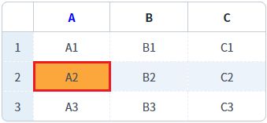
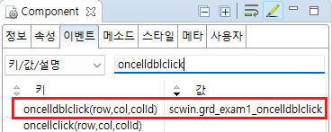

GridView의 oncelldblclick 이벤트 예제입니다. 이 이벤트는 바디 영역의 셀이 클릭된 경우 발생합니다. 이벤트 핸들러에서 더블 클릭된 셀의 'row index', 'column index', 'column id'를 확인할 수 있습니다.
oncellclick 이벤트와 함께 사용하는 경우 oncellclick 이벤트가 2회 발생한 이후에 oncelldblclick 이벤트가 발생합니다.
dblclick 이벤트가 발생하려면 반드시 click 이벤트가 2회 발생해야 하므로 dblclick 이벤트와 click 이벤트을 별개의 동작으로 구분하여 이벤트를 처리할 수 없습니다.
oncelldblclick 이벤트 발생 시 로그 출력하기
1
STEP 1: 두 번째 행의 'A' 컬럼의 셀을 더블 클릭합니다.
Image 1.브라우저(Chrome) 실행 예시

2
STEP 2: 실행 결과를 확인합니다.
oncelldblclick 이벤트가 발생되고 이벤트 핸들러가 실행되어 로그가 출력됩니다.
예제 영역 '로그 확인' 또는 브라우저의 개발자 도구의 콘솔(console)탭에 출력된 로그를 확인합니다.
Example 1.Log
[14:36:28] ** scwin.grd_exam1_oncelldblclick **
row index : 1
column index : 0
column id : col_a
[14:36:28] JSON Data : {"col_a":"A2","col_b":"B2","col_c":"C2","rowStatus":"R"}1
STEP 1: GridView의 oncelldblclick 이벤트 핸들러를 설정합니다.
예제 파일에서는 핸들러로 사용할 메소드명을 'scwin.grd_exam1_oncelldblclick'으로 설정하였습니다.
Image 2.웹스퀘어 스튜디오의 Component View - 이벤트 설정 예시

Example 2.Source
<!-- gridView 의 소스 본문 예시 --> <w2:gridView ev:oncelldblclick="scwin.grd_exam1_oncelldblclick" id="grd_exam1"> <!-- 중략 --> </w2:gridView>
2
STEP 2: 'scwin.grd_exam1_oncelldblclick' 핸들러를 정의합니다.
Example 3.Script
//GridView grd_exam1의 oncelldblclick 이벤트 핸들러 scwin.grd_exam1_oncelldblclick = function (row, col, colId) { //console에 log 출력 console.log(row, col, colId); //컬럼별 로직 구현 예시 - 'A' 컬럼을 더블 클릭한 경우 현재 행의 데이터를 JSON으로 출력 switch (colId) { case "col_a": //연결된 DataList를 모르는 경우 //let jsnRowData = $p.getComponentById(this.getDataList()).getRowJSON(row); //연결된 DataList를 아는 경우 let jsnRowData = dlt_exam.getRowJSON(row); //textarea에 log 출력 $c.frame.printExampleLog("JSON Data : " + JSON.stringify(jsnRowData), txa_log, false); //console에 log 출력 console.log(jsnRowData); break; case "col_b": break; case "col_c": break; default: break; } };
oncelldblclick
[DataList] getRowJSON